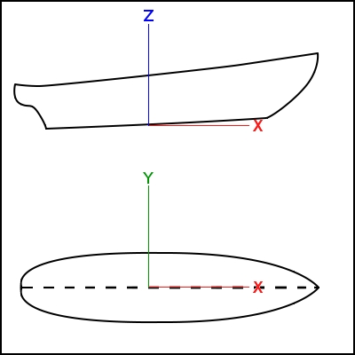
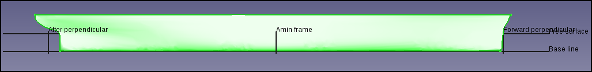
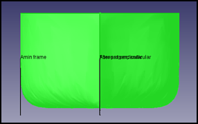
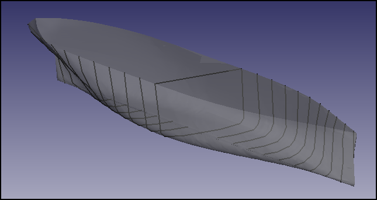
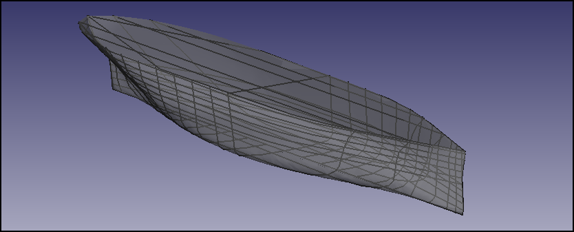
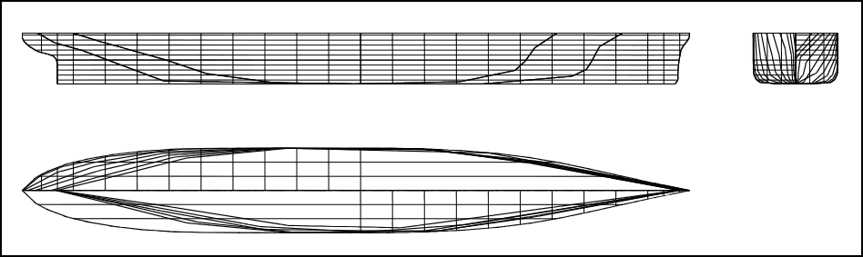
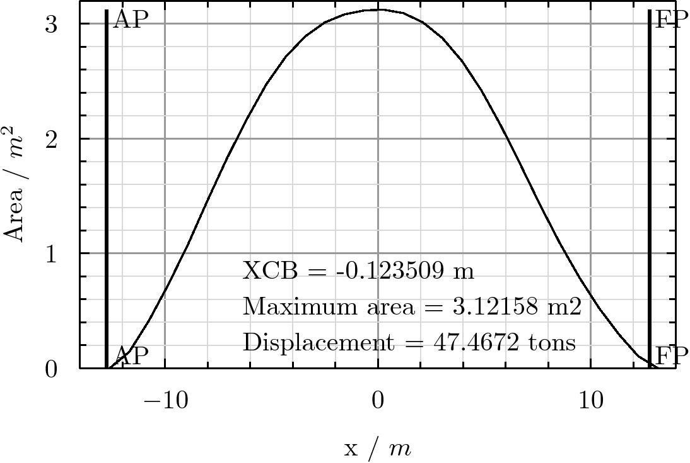
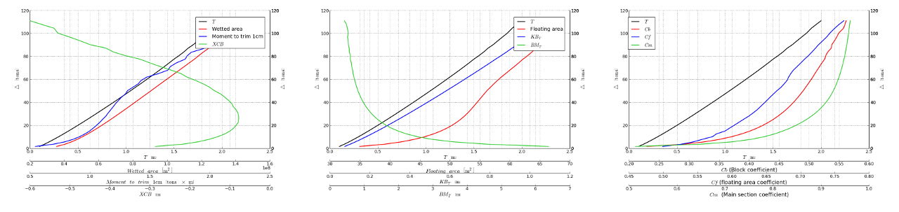

FreeCAD-Ship s60 tutorial/ro
| Topic |
|---|
| Ship Workbench |
| Level |
| Beginner |
| Time to complete |
| Authors |
| FreeCAD version |
| Example files |
| See also |
| None |
Introduction
În acest tutorial vom lucra cu nava Seria 60, de la Universitatea din Iowa. Tutorialul urmărește să arate cum să lucrați cu o navă simetrică monococă, dar navele multicocă sau nesimetrice pot fi tratate de aceeași manieră.
You can learn more about FreeCAD-Ship here
Loading geometry
Introducere
FreeCAD-Ship lucrează peste entitățile navei , care trebuie să fie create peste geometria furnizată. Geometria trebuie să fie un solid sau un set de solide, trebuie luate în considerare următoarele criterii:
- Trebuie asigurată toată geometria cocii (inclusiv corpurile simetrice).
- Geometria tribordului trebuie inclusă în domeniul negativ "y".
- Punctul de origine (0,0,0) se găsește la intersecția între secțiune maestră(punctul de mijloc între perpedinculara de la pupă și perpendiculara de la prova) și linia de bază


Se încarcă geometria Seriei 60
Pentru a ajuta noii utilizatori FreeCAD-Ship include un loader de exemple de geometrii, cu următoarele opțiuni:
- Seria 60 de la Universitatea din Iowa
- Navă canonic Wigley
- Seria 60 catamaran
- Wigley Catamaran

Executarea instrumentului (Ship design/Load an example ship geometry) va afișa un dialog de activități. Selectați seria 60 din Universitatea din Iowa 'și apăsați Accept. Instrumentul încarcă un nou document cu geometria s60_IowaUniversity.
Pentru a crea o instanță 'Ship' selectați geometria s60 și executați instrumentul de creare a navei (Ship design/Create a new ship).

Se va afișa un dialog de activități privind nava și unele adnotări la vizualizarea 3D. Adnotările vor fi eliminate atunci când închideți instrumentul de creare a navelor, deci nu vă faceți griji în legătură cu acest lucru.
Trebuie introduse cele mai importante date despre nave (FreeCAD-Ship utilizează un sistem de introducere progresivă a datelor, astfel încât operațiunile de bază pot fi realizate cunoscând numai datele de bază ale navelor, mai multe informații fiind necesare deoarece operațiunile devin mai complexe).
Dimensiunile principale trebuie introduse aici:
- Lungime: Lungime între perpendiculare, 25,5 m pentru această navă.
- Lățimea: Lățimea totală a navei, 3,389 m pentru această navă.
- Schiță: Pescajul proiectat, 1,0 m pentru această navă.


De obicei, lungimea dintre perpendiculare depinde de schița proiectului, deci dacă nu știți care este lungimea navei dvs. puteți seta schița și potriviți lungimea pentru a obține arcul și cursa intersecție.


Acelasi proces este valabil si pentru Beam fit. Rețineți că valoarea solicitată este fasciculul total, dar adnotarea se referă doar la jumătatea navei tribord.
Când apăsați butonul Accept programul crează noua Ship instance numită Ship la dialogul Tags & Attributes. Nu mai avem nevoie de geometrie, ca să-l ascunzi.

De aici mi departe, trebuie să avem Ship selectată înainte de a executa orice instrument FreeCAD-Ship .
Lines drawing
FreeCAD-Ship furnizează un instrument care facilitează obținerea unui Line Plan de la desenul liniilor navei

Linia de desen este un set de linii din secțiuni tăiate în toate cele trei axe, care va arăta în cele din urmă geometria corpului într-un plan de linii. Trebuie să furnizăm linii pentru următoarele 3 vizionări: Planul corporal (folosind tăieturile transversale)
- Planul de Sheer (folosind Longitudinals Cuts)
- Plan de jumătate de lățime (folosind tăieturile pe linia de plutire)
Secțiuni transversale
De obicei, trebuie efectuate 21 de secțiuni transversale echidistante între perpendiculare. pentru a face acest lucru, FreeCAD oferă un instrument automat pentru a face acest lucru, pur și simplu selectați tipul de secțiune transversală, mergeți la caseta "Creare automată" și setați secțiunile "21" , apoi apăsați 'Creare secțiuni' .


Tabelul secțiunilor este umplut, iar previzualizarea secțiunilor numit OutlineDraw este afișată. De obicei, mai multe secțiuni au fost adăugate la prova și la pupa, unde sunt înregistrate curburi complexe, pentru a face acest lucru la sfârșitul mesei și faceți dublu clic pe elementul gol pentru al edita, apăsând pe intro la a confirma. Adăugați următoarele secțiuni:
- X22 = -12.1125 m
- X23 = 12.1125 m
În funcție de complexitatea geometriei cocii, previzualizarea secțiunilor poate dura ceva timp. Pentru a elimina o secțiune, completați-o cu un text gol și apăsați pe Enter.
Longitudinal cuts
Two longitudinal cuts must be added, so select Longitudinal type of sections, go to Auto create box and set 2 sections, then press Create sections. Sections table is filled, and sections preview updated.
Linii de plutire
6 Linii de plutire Trebuie să adăugați între linia de bază și schița de proiectare, deci selectați tipul secțiunilor "Waterlines" "", mergeți la caseta "Creare automată" și setați "5" (Z = 0 m nu va fi luată în considerare, adăugați-o manual dacă aveți nevoie de ea), apoi apăsați 'Creare secțiuni' . Tabelul secțiunilor este umplut și previzualizarea secțiunilor este actualizată.
Câteva linii de plutire adiționale trebuie adăugate:
- Z6 = 1.2 m
- Z7 = 1.4 m
- Z8 = 1.6 m
- Z9 = 1.8 m
- Z10 = 2.0 m
Perform plot
Select 1:100 scale and press Accept to let the tool to generate the 3D sections in a new object.


In order to plot these sections you can use the drawing workbench:


Curba zonei transversale
Un parametru tipic hidrodinamic de proiectare a navei este curba zonelor transversale, care recuperează câțiva indicatori despre comportamentul corpului (rezistența la remorcare, seakeeping ...). FreeCAD-Ship furnizează o unealtă simplă pentru a realiza curba zonelor transversale.

When tool is executed a task dialog is shown, and free surface prewied is created at 3D view (Free surface preview will be removed when tool finished, so don't worry about them). Into task dialog input and output data is present.
Input data
Proiectarea și orientarea (unghiul de rotație a muchiei "H", pozitiv în cazul în care poate crește înălțimea bordului) trebuie furnizate. Este posibil să se efectueze mai multe curbe de zone, în funcție de situațiile de încărcare a navei, dar trebuie realizate două parcele tipice:
- Designul curbei suprafețelor transversale: Fără unghi de rotație și utilizarea unui proiect de proiectare, 1,0 m în acest caz.
- Curba maximă a ariilor transversale: fără unghi de triminare și maximum de pescaj permis, de 2,0 m în acest caz.
Output data
Some relevant data is shown at real time:
- L: Lenght between perpendiculars, value set at ship instance creation.
- B: Beam selected at ship creation.
- T: Actual draft amidships.
- Trim: Trim angle.
- TAP: After perpendicular draft.
- TFP: Forward perpendicular draft.
- Displacement: Ship displacement (salt water considered, divide by 1.025 in order to know displaced volume).
- XCB: Buoyancy centre point X coordinate (relative to midship section).
Cand apasati butonul Accept se face un grafic (în funcție de complexitatea geometriei poate dura ceva timp, puteți vedea progresul pe terminal și opriți lucrul apăsând Ctrl + C). După terminarea activității, FreeCAD va genera un Plot (a se vedea documentația plot module module) și o SpreadSheet (a se vedea documentația Spreadsheet workbench documentation).


Puteți vedea curba zonelor transversale maxime pentru a vedea diferențele (de exemplu, observați că curba zonei trece prin perpendiculare acum).
Hydrostatică
Calculul hidrostaticii este o etapă critică la proiectarea navei datorită cunoașterii parametrilor principali ai cocii de stabilitate. Hidro staticile sunt date obligatorii pentru ca navele de certificare ale societatilor de clasificare și datele legate de condițiile de încarcare (greutăți și poziție gravitațională) să furnizeze date esențiale despre stabilitatea navei. FreeCAD-Ship furnizează un instrument pentru obținerea curbelor hidrostatice principale (curbele GZ sunt luate în considerare în alt instrument).

Când se execută un instrument, este afișat un dialog de activități. De obicei, curbele Hydrostatice sunt prezentate pentru fiecare unghi de ruliu, în acest tutorial se va considera unghiul de ruliu drept (0º), cu un interval în jurul fiecărei versiuni de încărcare. Din moment ce nu știm ce condiții de încărcare putem obține, vom lua în considerare aproape posibilitățile de proiectare (de obicei, pentru a obține cât mai multe posibilități, arhitecții navali potrivesc intervalului până la pescajul fezabil).
Așadar, am stabilit următoarele date:
- Ruliu = 0 grade
- Pescaj minim = 0,1 m
- Pescaj maxim = 2,0 m
- '' Numărul de puncte '= 39. O mulțime de puncte sau geometrii sunt cu adevărat complexe implică timpi lungi de calcul, în acest caz pot fi cheltuit aproximativ un minut.
Atunci când sunt apăsate butoanele Accept (vezi plot module documentation) și o foaie de calul este generată (vezi Spreadsheet workbench documentation).


Continuă să înveți FreeCAD-Ship
Acum sunteți gata să continuați să învățați Ship, aici este al doilea capitol din seria 60 de la nava universitară din Iowa.
The FreeCAD Ship s60 tutorial (II) is the second chapter of Series 60 from Iowa university ship.